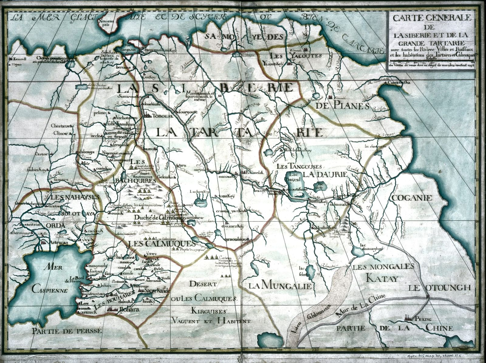

Carte generale de la Siberie et de la Grande Tartarie

Machine transcription and translation (Claude Opus 5.5, 2 Nov 2026), not yet reviewed by a specialist. [?] marks an uncertain reading, [illegible] what could not be read. Towns, rivers and lakes are listed under that category in the filter.
A French manuscript copy of a lost Russian map of Siberia, probably compiled between 1675 and 1685, from the Cartes Marines collection of French colonial maps. Its full title promises “all the rivers, towns and streams, and the dwellings of the Tartars and Kalmyks”: the Russian names are written in French spelling, and tents mark the nomadic peoples, from the Yakuts and Tungus to the Kalmyks, Bashkirs and Mongols, down to the Great Wall and Peking. Every text on it was read from the scan by an AI model, Claude Opus 5.5, working in four parts: 55 titles, notes and names of peoples and regions, pinned on the map, and 264 towns, rivers and lakes, shown when you choose them in the filter. No published transcription exists, so the readings are the model's, with its own confidence for each. The labels along the lines between the four parts were read a second time, independently: 48 of 73 agree letter for letter, and the 25 that differ, almost all small river names, are flagged in their commentary as worth checking. The scan is faded, so the map view has its contrast adjusted to bring out pale ink; “As scanned” shows the Newberry image itself.
Ostrgh poustozem[illegible]Koy ou palisades du lac wid
Pustozersk ostrog (fort), or the palisades of lake Wid [Pustozersk]
Show on the mapSobsKaya Zastava ou la garde de sobsKoÿ
Sobskaya Zastava, or the guard-post of Sobskoy
Show on the mapLA MER GLACIALLE ET DE SCYTHIE OU BIEN DE TARTARIE
The Icy Sea and [Sea] of Scythia, or else of Tartary [the Arctic Ocean]
Show on the mapSAMOYEDES
Samoyeds
Show on the mapLES YACOUTES
The Yakuts
Show on the mapCARTE GENERALE DE LA SIBERIE ET DE LA GRANDE TARTARIE avec toutes les Riviere Villes et Ruissaux et les habitations des Tartares et Calmuques
General map of Siberia and of Great Tartary, with all the rivers, towns and streams, and the dwellings of the Tartars and Kalmyks
Show on the mapEchelle 50 100 200 300 400 500 1000 des Verstes de russie dont un dégré du meridien contient 104½
Scale of Russian versts, of which one degree of the meridian contains 104½
Show on the mapLac de Petchor ou ozero petchersKoé
Lake of Pechora, or Pechora Lake (Russian 'ozero', lake)
Show on the mapManhazemsK et tourouhansK le même
Mangazeya and Turukhansk, the same [place] [Turukhansk]
Show on the mapLA SIBERIE
Siberia
Show on the mapRiviere Souhaya ou Riviere Sechje
Souhaya River or Sechje River
Show on the mapDE PIANES
of (the) Pianes
Show on the mapRiuiere Belajaneca la Riuiere blanche
The Belaya (literally 'the white river') [Belaya]
Show on the mapVille de Cozaks de Sabathaij
Cossack town of Sabathaij
Show on the mapoussollié camsKoyé ou firaysK
Usolye-Kamskoye, or Firaysk
Show on the mapLES BACHQUIRES
The Bashkirs (people) [Bashkirs]
Show on the mapdesert doustroucowe
Desert of Ustroucowe (d'Oustroucowe)
Show on the mapCazatchia orda ou la nations cazaques
The Cossack horde, or the Cossack nation [Kazakhs]
Show on the maples peuples dentres le Montagnes
the peoples between the mountains
Show on the mapLes barabines
the Barabines (people)
Show on the map[illegible]
Show on the mapLa Riuiere.
The river
Show on the mapLA TARTARIE
Tartary [Tartary]
Show on the mapLES TANGOUSES
The Tungus
Show on the mapLA DAURIE
Dauria
Show on the mapRiviere gorÿ ou hory
Gory River, or Hory
Show on the mapSolenoye ozero lac sallé
Solenoye ozero, salt lake
Show on the mapSOLOTAYA ORDA
Golden Horde
Show on the mapLES NAHAYSES
The Nahayses (people)
Show on the maples Montagnes Sallé
the Salt Mountains
Show on the mapPeuples d'albobie ou tou[illegible]cowe Prices des Montagnes
Peoples of Albobie, or Tou...cowe, 'Prices' [?] of the Mountains
Show on the maples Calmuques blanes
the White Kalmyks
Show on the mapDuché de Calmuques
Duchy of the Kalmyks
Show on the mapLes Calmuques
the Kalmyks
Show on the mapLe peuples da Countachine
the peoples of Countachine
Show on the mapPeuples palielles.
Palielles peoples
Show on the mapPeuples de la nation Coltoÿà moungale
Peoples of the Coltoya Mongol nation
Show on the mapPeuples de cozaques
Peoples of the Cossacks
Show on the mapLac alhime ou bien de melegesKoy
Lake Alhime, or else (lake) of Melegeskoy
Show on the mapCotchevia moungalsKie ou les Habitats de Moungales ou les Vagues de Moungales
Cotchevia Moungalskie, or the Dwellings of the Mongols, or the Wanderings of the Mongols
Show on the mapHery Serebrenie ou Montagnes d'argent
Hery Serebrenie, or Silver Mountains
Show on the mapCOGANIE
Cogania (region)
Show on the mapMER CASPIENNE
Caspian Sea
Show on the mapLe Bord de Hivine
The Coast of Hivine
Show on the mapLES BOUHARES
The Bukharans
Show on the mapS[illegible]
Show on the mapDESERT OU LES CALMUQUES. KIRGUISES' VAGUENT ET HABITENT
Desert where the Kalmyks [and] Kirghiz roam and dwell
Show on the mapLA MUNGALIE
Mungalia [Mongolia]
Show on the mapLieu sablonneux
Sandy place
Show on the mapMur de La Chine
Wall of China [Great Wall of China]
Show on the mapKATAY
Cathay
Show on the mapLES MONGALES
The Mongols
Show on the mapLE OTOUNGH
The Otoungh (region)
Show on the mapPARTIE DE PERSSE
Part of Persia
Show on the mapPARTIE DE LA CHINE
Part of China
Show on the map| On the map | Reading |
|---|---|
| Keuroll | Keuroll |
| Nouveau païs | New land |
| Mer de Mangazin | Sea of Mangazin (Mangazeya) [Taz Bay] |
| R. Oſte[illegible]ueca | Oste...ueca River |
| ſtaroy manhazeisKoy | Old Mangazeya [Mangazeya] |
| R. Piassida | Piassida River [Pyasina] |
| R vilenea[?] | Vilenea River |
| R hanaga | Hanaga River |
| Lac | Touchruine | Lake Touchruine |
| R. anabari | Anabari River [Anabar] |
| R. olenehe | Olenehe River [Olenek] |
| R Onuola | Onuola River |
| Zimouië | Zimouie (winter quarters) |
| R. Aldone | Aldone River [Aldan] |
| R. Indizarca | Indizarca River [Indigirka] |
| R. alabaha | Alabaha River |
| R. Colima | Kolyma River [Kolyma] |
| Mezenie | Mezen [Mezen] |
| Chestacow | Chestacow |
| R. Petchar | Pechora River [Pechora] |
| La R. Cama | Kama River [Kama] |
| Lac Volock | Lake Volock |
| pelime | Pelym [Pelym] |
| R. Vozoucal | Vozoucal River |
| R. Pelime | Pelym River [Pelym] |
| ſolle KamsKaya | Solikamsk [Solikamsk] |
| R. Conda | Konda River [Konda] |
| berezove | Berezov [Beryozovo] |
| Verhotou[illegible]re | Verkhoturye [Verkhoturye] |
| SamarowsKoy | Samarovsky [Samarovo] |
| R. Coda | Koda River |
| CozKoy | Kozkoy |
| demchinsKe | Demchinske |
| TOBOLSK | Tobolsk [Tobolsk] |
| R. tasba | Tasba River |
| R. bardacoisa | Bardacoisa River |
| R. Houssinia | Houssinia River |
| ſourgoute | Surgut [Surgut] |
| R. vafougan | Vafougan River |
| R. lodigena | Lodigena River |
| R. Tou[illegible]cha | Tou...cha River |
| R. Courouhan | Courouhan River |
| ſiues Ka | Siues Ka (river) |
| Enisseÿ | Yenisei River [Yenisei] |
| R. Sewenaya | Sewenaya River |
| R. Loutna[?] | Loutna River |
| R. Zinlha[?] | Zinlha River |
| Panea | Panea |
| R. TounhouſKa | Tounhouska River (Tunguska) |
| R.Snovha | Snovha River |
| R.Calba | Calba River |
| R. Silouga | Silouga River |
| R. Zizue | Zizue River |
| YacoutsKoÿ | Yakutsk [Yakutsk] |
| R. lena | Lena River [Lena] |
| R. Za[illegible]le | Za...le River |
| R. aldane | Aldane River |
| R. OleKma | Olekma River [Olekma] |
| R coutchaK | Coutchak River |
| R. Nonicle | Nonicle River |
| R Toussire | Toussire River |
| R.maya | Maya River [Maya] |
| Lac vagane | Lake Vagane |
| R. masse | Masse River |
| R bloudnaya | Bloudnaya River |
| Zimouië | Zimouie (winter quarters) |
| R. Peretchmnu [?] | Peretchmnu River |
| R CamtchatKa | Kamchatka River [Kamchatka] |
| R. ouda | Ouda River |
| R. Ohota | Ohota River [Okhota] |
| CamtchatKa | Kamchatka |
| ſinbirsKoy | Simbirsk [Ulyanovsk] |
| Cazane | Kazan [Kazan] |
| R. oulKe | Ulke River |
| Clinow | Klinov [Vyatka] |
| ſamara | Samara [Samara] |
| Riuiere WyatK | Vyatka River [Vyatka] |
| la R. Samari | Samari River |
| R. Belajaneca | Belaya River [Belaya] |
| R. Cama | Kama River [Kama] |
| bir | Birsk |
| alabouga | Elabuga [Yelabuga] |
| orcle | Orcle |
| osa | Osa [Osa] |
| R. oufa | Ufa River [Ufa] |
| ouuisKoy | Ouviskoy |
| R. yaÿisa | Yayisa River |
| Nigenoye oussolié | Nizhneye Usolye (Lower Usolye) |
| toumenie | Tyumen [Tyumen] |
| ſerapoulle | Serapoulle |
| R. Samar | Samar River |
| Coungouire | Kungur [Kungur] |
| Toura[?] | Tura River |
| R. Misse[?] | Misse River |
| R. ſinderlik | Finderlik River |
| Tobollie | Tobol River [Tobol] |
| R. Vagai | Vagai River [Vagay] |
| bazeo | Bazeo |
| R. IliKom | Ilikom River |
| Irtiche | Irtysh River [Irtysh] |
| GelensKo | Gelensko |
| R. Ocha | Ocha River |
| R. CamichloruKa | Camichloruka River |
| R. Arcana | Arcana River |
| tara | Tara [Tara] |
| Obie | Ob River [Ob] |
| R. Coultchenoisa | Coultchenoisa River |
| Riuiere. | River (generic label, no name) |
| R. Zatcha | Zatcha River |
| narÿme | Narym [Narym] |
| R. Motcha | Motcha River |
| R. Deujassi | Deujassi River |
| macowsKoy | Makovskoy |
| R. Voronera[?] | Voronera River |
| R. Nolarsima | Nolarsima River |
| KberezouKa | Kberezouka |
| R. ToungouſKa | Toungouska River (Tunguska) |
| R Vorohuba | Vorohuba River |
| EnisseisK | Yeniseisk [Yeniseysk] |
| brazoy | Brazoy (town) |
| R. Selem | Selem River |
| R. Hime | Hime River |
| R Itera | Itera River |
| R. ChmanyalKa | Chmanyalka River |
| R | unnamed river |
| R. Vourdganu [?] | Vourdganu River |
| R birusKa | Biruska River |
| R. Anhara | Anhara River [Angara] |
| R. partan | Partan River |
| R. patomna | Patomna River |
| R. Kirenga | Kirenga River [Kirenga] |
| Lac | Baÿcal | Lake Baikal [Baikal] |
| zocoutsKoses | Zocoutskoses (town) |
| R Witime | Witime River [Vitim] |
| WerholensKoy | Verkholensk |
| lac ſico | Lake Sico |
| R Zja | Zja River |
| R Nertcha | Nertcha River [Nercha] |
| R. llara [?] | Llara River |
| R. Ichabiza | Ichabiza River |
| Ryulik | Ryulik River |
| R. amogore | Amogore River |
| R. Bitcha | Bitcha River |
| R. bolchoy aldone | Bolchoy Aldone River ('Great Aldone') |
| R. aldone | Aldone River |
| lac chamorousKo | Lake Chamorousko |
| R GiaKra | Giakra River |
| R. Tihol | Tihol River |
| R. Tougor | Tougor River |
| R Amour | Amour River [Amur] |
| Rchingal | Chingal River |
| R. Hamena | Hamena River |
| tchernoyar | Tchernoyar [Chernyi Yar] |
| OttuechtchensKaya [?] | Ottuechtchenskaya |
| czaritzine | Czaritzine [Tsaritsyn, now Volgograd] |
| berKellia | Berkellia |
| Volga R. | Volga River [Volga] |
| Riuiere Roustane | Roustane River |
| ſaratowe | Saratowe [Saratov] |
| Astracan | Astracan [Astrakhan] |
| R. douzta [?] | Douzta River |
| R. doustza | Doustza River |
| ÿaÿK | Yayk |
| La Riuiere | the river |
| R. Verniyenne [?] | Verniyenne River |
| R. tcar[illegible] | Tcar... River |
| R. Sanhite | Sanhite River |
| R. maloy ſounirite [?] | Maloy Sounirite River |
| coziayK | Coziayk |
| yayques | Yaik River [Ural] |
| R. Yaïcouba | Yaicouba River |
| R. Camicluſamara [?] | Camiclusamara River |
| R. Zaïek | Zaiek River |
| ounacK | Ounack |
| bahezane | Bahezane |
| Sable daracoune | Daracoune Sand |
| R. tchoune | Tchoune River |
| calmuques | Kalmyks |
| ÿawy | Yawy |
| Sable Caracoune | Caracoune Sand |
| Sables | bourssoucane | Bourssoucane Sands |
| R. Ome | Ome River [Om] |
| omÿ | Omy |
| yamichew | Yamichew |
| lac de | barabinux [?] | Lake of the Barabinux |
| Lac Couzougol [?] | Lake Couzougol |
| Lac yamichewe | Lake Yamichewe |
| R. Tome | Tome River [Tom] |
| tomsKoÿ | Tomskoy [Tomsk] |
| crassno yarsKoy | Crassno yarskoy [Krasnoyarsk] |
| couznezKoÿ | Couznezkoy [Kuznetsk] |
| caraoulnoÿ | Caraoulnoy |
| R. altechoura | Altechoura River |
| R. Ougor | Ougor River |
| R.yagotina | Yagotina River |
| R ſida | Sida River |
| bolayna | Bolayna (town) |
| R OurcKoÿ | Ourckoy River |
| R. Selengha | Selengha River [Selenga] |
| R.ouda | Ouda River [Uda] |
| Rtchinoff | Tchinoff River |
| R ItonKa | Itonka River |
| oudinsKoÿ | Oudinskoy [Udinsk, now Ulan-Ude] |
| R. Ottoga | Ottoga River |
| R honask | Honask River |
| R.niloda | Niloda River |
| ſelenhisKoÿ | Selenhiskoy [Selenginsk] |
| Rgiga | Giga River |
| R.onon | Onon River [Onon] |
| a[?]haunsKo | Arhaunskoy? (town) |
| R. Argounia | Argounia River [Argun] |
| nertchinsKoy | Nertchinskoy [Nerchinsk] |
| R Coÿhar | Coyhar River |
| R herbou | Herbou River |
| R. Calabout | Calabout River |
| Ralbouziha | Albouziha River |
| R. Comar | Comar River |
| lac dmanarghune | Lake Dmanarghune |
| R. Naguna | Naguna River |
| R merhene | Merhene River |
| R. ÿal | Yal River |
| R. Malhamour | Malhamour River |
| R Corga | Corga River |
| R ſigoutcha | Sigoutcha River |
| cor·żume | Corzume |
| Lere | Lere |
| paranssa | Paranssa |
| carazacK | Carazack |
| R. arssan | Arssan River |
| R. Arzassa | Arzassa River |
| Mora | mandrantzan | Mora mandrantzan |
| fortona | Fortona |
| mangoussla | Mangoussla |
| caraKouz | Carakouz |
| bahara | Bahara |
| Lac b[illegible]chli[illegible] | Lake B...chli... |
| faraw | Faraw |
| tollezib | Tollezib |
| ſiminane | Siminane |
| R. amardaria | Amardaria River |
| conda | Conda |
| dabosKa | Daboska |
| nazousse | Nazousse |
| Bohara | Bohara [Bukhara] |
| R. Cande | Cande River |
| R. hiran | Hiran River |
| caraKal | Carakal |
| maré | Maré |
| Tasscoune | Tasscoune |
| R. Sohai [?] | Sohai River |
| faraK | Farak |
| heziKy | Heziky |
| KireaK | Kireak |
| Adercande | Adercande |
| ÿande | Yande |
| Eylah | Eylah |
| R. Cande | Cande River |
| Tèraſſe | Terasse |
| R. Colessara | Colessara River |
| lac ſelenho | Lake Selenho |
| R. oreone | Oreone River |
| R. bonouhe | Bonouhe River |
| R. Arilone | Arilone River |
| PEKING | Peking [Beijing] |